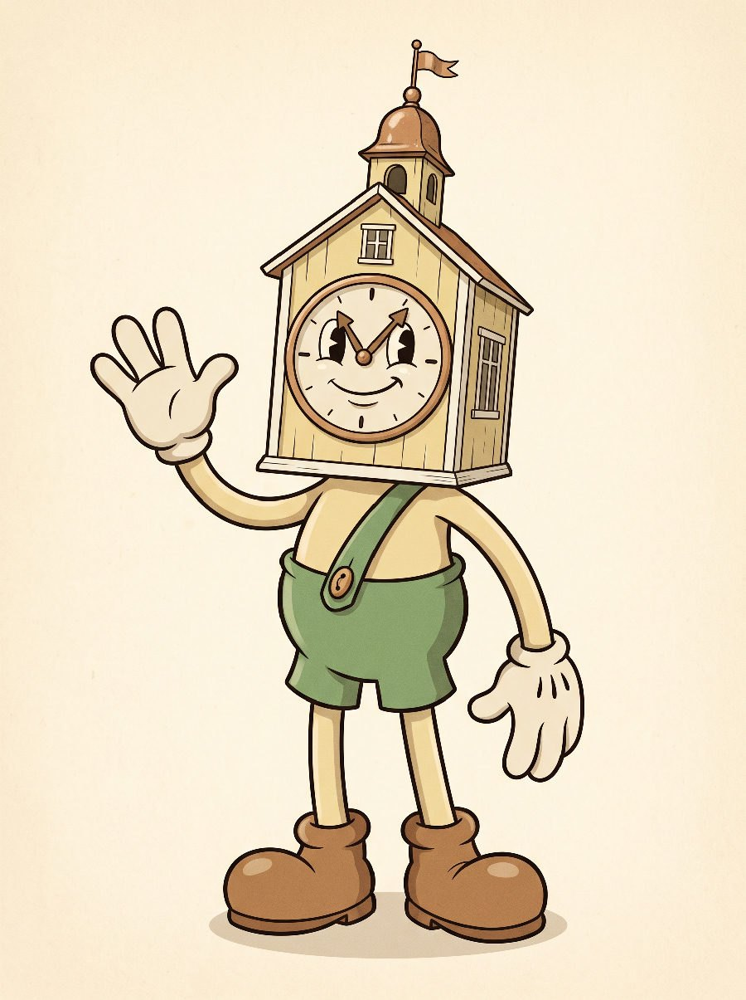
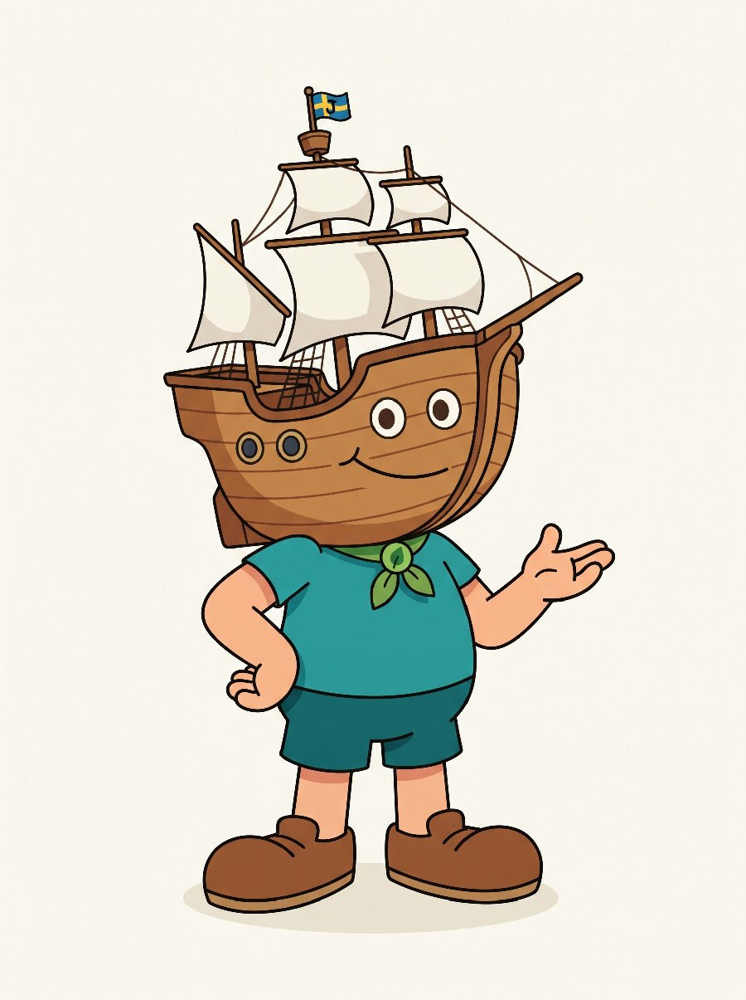
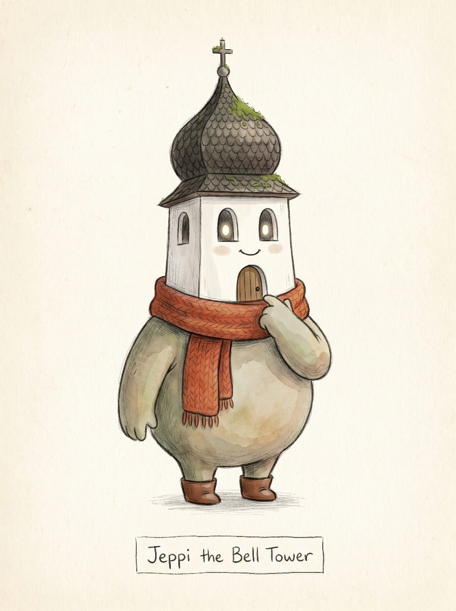
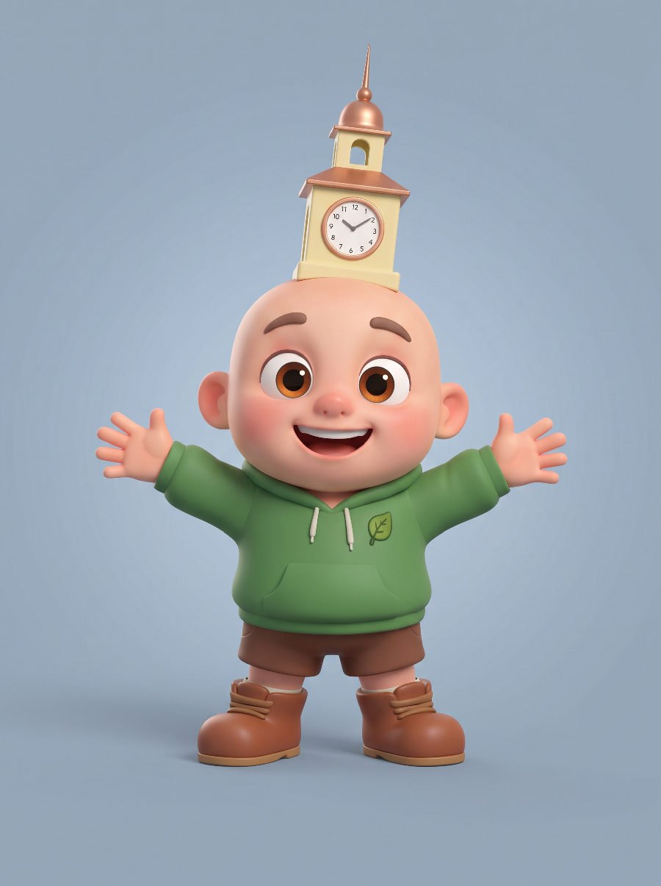
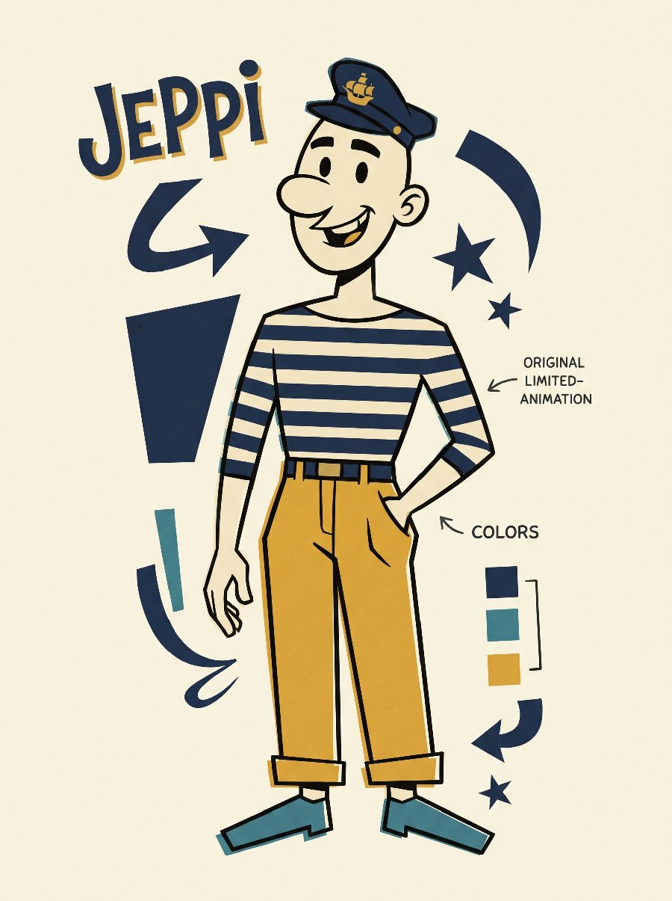

Rådhustornet
— Vintage Rubber Hose
Den mest klassiska tolkningen av briefen — närmast den tecknade guldålderns känsla. Urtavlan blir Jeppis ansikte: visarna fungerar som ögonbryn och ger honom ett uttryck som kan animeras med enkla medel. Tornhuvudet gör siluetten omedelbart igenkännbar även i svartvitt eller på långt håll, vilket är en styrka både i musikvideon och i framtida merchandise.

Jacobstads Wapen
— Modern Flat 2D
Den djärvaste och mest särpräglade siluetten av de fem — ett skeppshuvud med segel som hår går inte att förväxla med någon existerande figur, vilket ger det starkaste utgångsläget för designskydd. Kopplingen till stadens sjöfartshistoria ger figuren en berättelse, och lövscarfen knyter an till miljötemat. Stilen är enkel och billig att animera konsekvent.

Kyrktornet
— Storybook Akvarell
Den varmaste och mest emotionella riktningen. Valvfönstren blir vänliga lysande ögon och porten en mun — och mossan och de små växterna som gror på taket gör miljötemat till en del av själva figuren: naturen växer bokstavligen på honom. Akvarelltextur och stickad halsduk ger en ömhet som kontrasterar starkt mot en värld som går under.

Pojken med tornet
— Mjuk 3D
Här är Jeppi en vanlig liten figur — ett stort runt huvud, varma ögon, grön hoodie med lövemblem — och landmärket har flyttat upp och blivit hans hatt. Det gör honom mänskligare och lättare att känna med, samtidigt som Jakobstads-kopplingen finns kvar i varje bildruta.

Sjömannen
— Retro UPA 50/60-tal
Den vuxnaste och mest grafiska riktningen — en vanlig karl med sjömansmössa där landmärket lever vidare som guldemblem. Randig tröja, senapsgula byxor och en avslappnad hållning ger en figur som känns som en klassisk europeisk tidningsserie. Stilen är extremt produktionsvänlig: få linjer, plana färger, tydliga poser.
